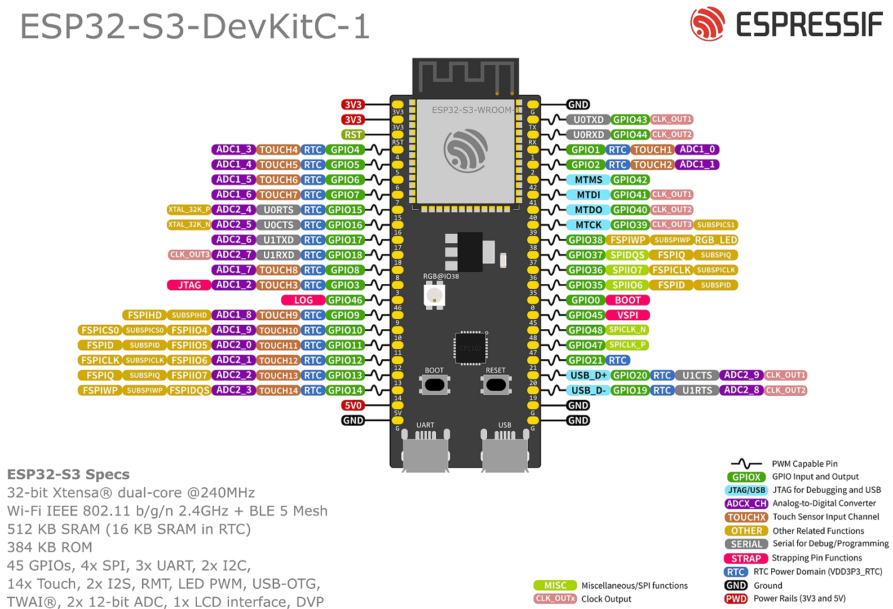
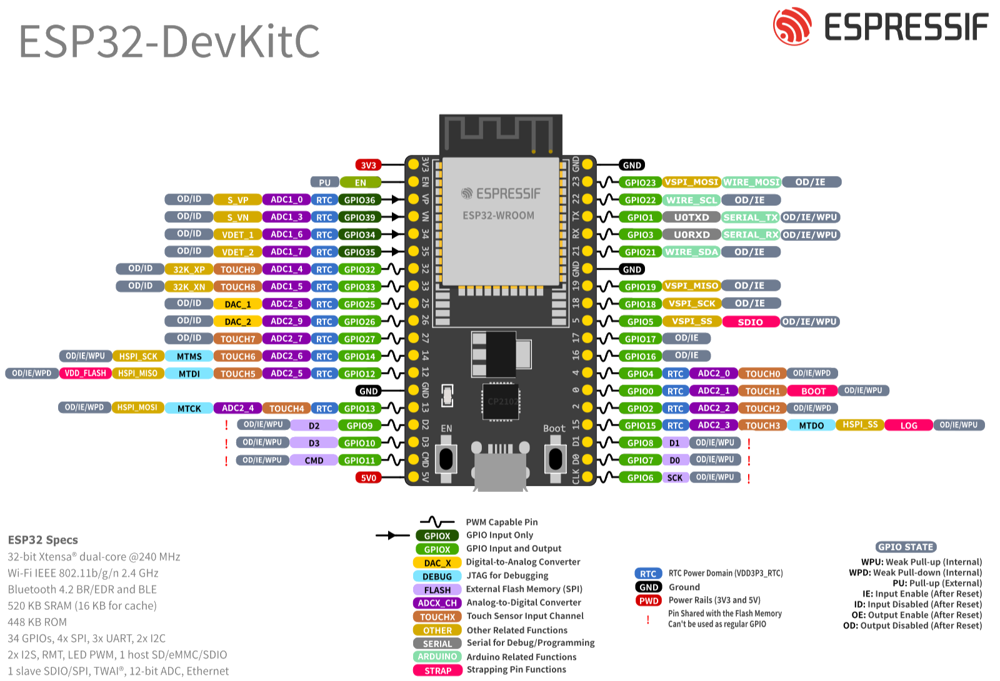
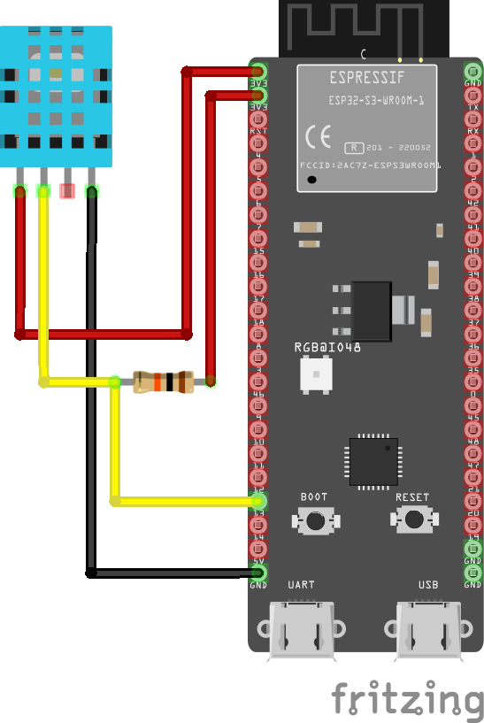

Liga Acadêmica de Sistemas Embarcados Centro de Informática · UFPE
Formação em ESP32 · Módulo 1
Conhecendo a família ESP32
Do silício à bancada: como esses microcontroladores funcionam por dentro, o que cada
uma das doze séries faz e não faz, onde eles superam Arduino e STM32, e como escolher
o chip certo antes de fechar um projeto.
Lucas Rayan Guerra
Ciência Embarcada · ESPDocs
Material de apoio
Formação presencial · uso livre para fins educacionais
Apresentação
Sobre a formação, sobre a liga, e como aproveitar esta apostila.
A LASER, Liga Acadêmica de Sistemas Embarcados do Centro de Informática
da UFPE tem como propósito fortalecer a área de sistemas embarcados na universidade,
promovendo estudo, pesquisa e aplicação de tecnologias que envolvem tanto hardware quanto
software. Suas frentes vão de automação e Internet das Coisas a IA na borda, robótica,
sistemas críticos, tecnologias veiculares e engenharia biomédica.
Esta apostila acompanha a formação em ESP32 da liga. A escolha da plataforma não é
acidental: o ESP32 atravessa quase todas as frentes da LASER. Ele é o nó de IoT, é a
placa de automação, roda inferência na borda, e é barato o bastante para que cada pessoa
tenha o seu.
O que você vai levar deste módulo
Entender o que existe dentro de um ESP32 e por que ele é diferente de um Arduino.
Saber navegar as doze séries da família sem se perder na nomenclatura.
Ter um método objetivo para escolher a série de um projeto novo.
Reconhecer as limitações reais da plataforma antes de esbarrar nelas.
Sair com um sensor real lendo temperatura e umidade na sua bancada.
Pré-requisitos
Espera-se que você já tenha ligado um LED em algum microcontrolador e saiba o que é uma
porta digital. Programação em C ou C++ em nível básico ajuda, mas o código da prática é
curto e comentado. Não é preciso saber nada de Wi-Fi, RTOS, RISC-V ou
criptografia. Tudo isso aparece explicado no caminho.
Material para a prática
Uma placa ESP32-S3-DevKitC-1, um sensor DHT11, um
resistor de 10 kΩ, jumpers, protoboard e um cabo USB de dados. A lista
completa e o esquema de ligação estão no capítulo 9.
Como esta apostila está organizada
Os capítulos 1 a 3 constroem o entendimento do hardware. Os capítulos 4 a 6 apresentam a
família e comparam com alternativas. Os capítulos 7 e 8 são de decisão: como escolher série
e ferramenta. O capítulo 9 é a prática, e o 10 fecha com glossário e caminhos de estudo.
Ao longo do texto você encontra quatro tipos de caixa:
Dica
Atalho, boa prática ou recomendação que economiza tempo.
Atenção
Ponto que costuma causar problema se passar despercebido.
Erro comum
Armadilha concreta, com o sintoma que ela produz e como escapar.
Curiosidade
Contexto ou detalhe técnico que ajuda a fixar o conceito.
Sumário
Dez capítulos, do conceito à bancada.
1
O que é o ESP32
De onde ele veio e por que virou padrão de fato em projetos conectados.
O ESP32 é uma linha de microcontroladores da Espressif Systems, empresa
fundada em 2008 e sediada em Xangai. A história que interessa começa em 2014, com o
ESP8266: um chip barato de Wi-Fi vendido como "módulo serial para internet", que a
comunidade descobriu ser, na verdade, um microcontrolador completo por poucos dólares.
Em 2016 veio o ESP32 original, já projetado como plataforma: dois núcleos, Wi-Fi,
Bluetooth e um conjunto grande de periféricos. A partir de 2020 a linha se ramificou, e
hoje são doze séries, cada uma otimizada para um recorte diferente de
custo, consumo, conectividade e desempenho.
Linha do tempo
Ano
Lançamento
O que mudou
2014
ESP8266
Wi-Fi barato ao alcance de qualquer projeto. Ainda muito usado.
2016
ESP32
Dois núcleos, Bluetooth e periféricos de verdade. O marco da plataforma.
2019
ESP32-S2
Foco em segurança e USB nativo; abre mão do Bluetooth.
2020
ESP32-C3
Primeira série RISC-V. Marca a virada de arquitetura da empresa.
2021
ESP32-S3
Dois núcleos com instruções vetoriais para IA. Vira o carro-chefe.
2022
ESP32-C6, H2
Chega o rádio 802.15.4: Zigbee, Thread e Matter entram na família.
2023
ESP32-P4
Alto desempenho sem rádio, com MIPI para câmera e display.
2024 e 2025
C5, C61, H4, S31
Wi-Fi 6, dual-band de 5 GHz e a geração seguinte de malha.
Datas de anúncio. A disponibilidade comercial e o suporte nas ferramentas costumam vir meses depois.
O que explica a adoção
Antes do ESP8266, colocar um projeto na internet significava comprar um microcontrolador
e um módulo de rede, ligá-los por serial ou SPI, e gastar boa parte da memória
disponível com a pilha de comunicação. O ESP32 traz o rádio dentro do mesmo
encapsulamento do processador, com as pilhas de Wi-Fi e Bluetooth prontas,
testadas em campo por centenas de milhões de dispositivos.
Some a isso o preço, já que um módulo custa menos que muitos microcontroladores sem rádio, e
uma documentação pública completa, com datasheets, manuais de referência e código-fonte
abertos. Essa combinação é rara no mercado de semicondutores.
SoC, módulo, placa e série: quatro coisas diferentes
Muita confusão nasce de usar "ESP32" para quatro coisas distintas. Vale separar desde já,
porque isso muda o que você compra, quanto custa e como projeta:
Termo
O que é
Exemplo
Chip (SoC)
O silício nu, num encapsulamento QFN de poucos milímetros. Precisa de antena,
cristal e memória flash externos para funcionar. É o que a Espressif vende em
bobina para fábricas.
ESP32-S3
Módulo
O chip montado numa plaquinha com flash, cristal, antena, blindagem e, o
mais importante, homologação de rádio. É o que vai dentro
de um produto comercial.
ESP32-S3-WROOM-1
Placa de desenvolvimento
O módulo numa placa com regulador de tensão, conector USB, botões de boot e
reset e pinos em barra. É o que usamos para aprender e prototipar.
ESP32-S3-DevKitC-1
Série
A família daquele silício: define a arquitetura do processador, quais rádios
existem e quais periféricos estão presentes.
Série S3
Homologação pertence ao módulo, não ao chip
Se um dia você levar um projeto a produto, lembre que as certificações de rádio
(Anatel no Brasil, FCC nos Estados Unidos, CE na Europa) são emitidas para o
módulo. Usar um módulo já homologado evita um processo de certificação
caro e demorado. Projetar com o chip nu significa homologar o seu produto do zero.

Os três primeiros níveis numa imagem só. O retângulo prateado no centro é o
módulo ESP32-S3-WROOM, com a antena impressa numa ponta e a blindagem
metálica cobrindo o resto; dentro dele, sem aparecer, está o chip. Todo
o resto (regulador de tensão, conversor USB-serial, botões e as barras de pinos) é a
placa de desenvolvimento. Num produto seu, só o módulo iria para a PCB.
O que a Espressif entrega junto com o silício
Boa parte do valor do ESP32 não está no chip, e sim no software que vem junto. O
ESP-IDF (Espressif IoT Development Framework) é o ambiente oficial:
baseado em FreeRTOS, traz as pilhas de Wi-Fi, Bluetooth, TCP/IP, TLS, atualização remota
de firmware (OTA), sistemas de arquivos, provisionamento e ferramentas de depuração. É
software que levaria anos para uma equipe escrever do zero.
Existe também o core Arduino para ESP32, que traduz esse ambiente para as
funções que você já conhece. É a porta de entrada, e é o que usaremos na prática, mas por
baixo continua sendo o ESP-IDF rodando. Entender isso ajuda quando algo não funciona:
muitas respostas estão na documentação do IDF, não na do Arduino.
2
Anatomia: o que existe dentro do chip
Os blocos que aparecem em qualquer série, e por que cada um importa.
Diagrama de blocos do ESP32-S3, publicado pela Espressif. Vale voltar a ele ao longo da
apostila: o Main CPU com os dois núcleos Xtensa e, ao lado, as memórias
internas (ROM, SRAM e o cache que discutimos adiante). O bloco
RF é a parte analógica do rádio, que fala com a antena. Em
RTC mora o coprocessador ULP, que continua acordado com o resto do chip
dormindo. E o bloco Security é exatamente o assunto do capítulo 5: SHA,
AES, RSA, RNG, HMAC, assinatura digital, Secure Boot e criptografia de flash, tudo em
silício.
Cada série tem o seu diagrama equivalente, com blocos a mais ou a menos. Imagem da
Espressif Systems, reproduzida para fins didáticos.
Processador: Xtensa ou RISC-V
As séries mais antigas (ESP32, S2, S3) usam núcleos Xtensa, arquitetura
licenciada da Cadence. As séries novas (C2, C3, C5, C6, C61, H2, H4, P4, S31) migraram
para RISC-V, um conjunto de instruções aberto e livre de royalties.
Para quem programa em C, a diferença é quase invisível, porque o compilador cuida disso. Ela
aparece quando você precisa de assembly, de ferramentas de análise de baixo nível,
ou quando uma biblioteca pré-compilada existe só para uma das arquiteturas. A tendência é
clara: todo lançamento recente é RISC-V.
Um ou dois núcleos, e o que fazer com eles
Séries como ESP32, S3, P4, H4 e S31 têm dois núcleos. No ESP-IDF eles recebem nomes:
PRO_CPU (núcleo 0) e APP_CPU (núcleo 1). Por convenção, as
tarefas do Wi-Fi e do Bluetooth rodam no núcleo 0, deixando o 1 mais livre para o seu
código. É possível fixar uma tarefa em um núcleo específico, recurso valioso quando você
precisa de um laço com temporização mais previsível.
O coprocessador de baixo consumo
Algumas séries trazem um segundo processador de baixíssimo consumo, o ULP
ou LP core. Ele continua acordado enquanto o processador principal dorme, lendo um sensor
de tempos em tempos e só acordando o resto do chip quando algo interessa. É o que permite
um projeto a bateria durar meses em vez de dias.
Memória: quatro tipos, quatro papéis
Memória
Para que serve
Ordem de grandeza
SRAM
Memória de trabalho: variáveis, pilha, buffers. Rápida e volátil. É o recurso
que acaba primeiro em projetos com Wi-Fi: a pilha de rede sozinha consome
dezenas de kilobytes.
272 KB a 768 KB
ROM
Gravada de fábrica pela Espressif. Contém o bootloader inicial e rotinas
básicas. Você não altera, e é por isso que um ESP32 é praticamente
impossível de "brickar" de forma permanente.
128 KB a 576 KB
Flash externa
Onde mora o seu programa. Fica fora do núcleo do chip, num segundo
componente ou dentro do mesmo encapsulamento, e conversa por SPI.
2 MB a 16 MB típico
PSRAM
RAM extra externa, opcional, para quando a SRAM não basta: buffer de câmera,
tela gráfica, áudio, modelo de rede neural.
2 MB a 32 MB
O detalhe que pega todo mundo
A flash é externa ao núcleo. Isso significa que alguns pinos do chip
já estão ocupados conversando com ela o tempo todo. No ESP32 original, são os GPIO 6 a 11.
Se você usar esses pinos para um LED, o chip trava, porque você está interferindo no
barramento de onde o programa está sendo lido. Todo ESP32 tem um conjunto assim; o
número e a posição mudam conforme a série.
O que o diagrama de blocos não deixa evidente: a flash fica fora do
chip. O cache e a MMU escondem isso do seu código, mas os seis pinos desse barramento
ficam ocupados de forma permanente, mesmo com o seu programa rodando. É daí que sai o
primeiro grupo de pinos com restrição, mais adiante neste capítulo. A barra diagonal
com o número é a notação usual de esquemático para um feixe de condutores.
Como o código roda se ele está fora do chip?
Existe um bloco chamado MMU com cache entre o processador e a flash.
Ele traz para dentro do chip os pedaços de código que estão sendo executados, mantendo
os mais usados em cache. O efeito é que a flash externa "parece" memória interna, com a ressalva de que um acesso fora do cache custa bem mais caro. Esse é um dos
motivos pelos quais o desempenho de um ESP32 varia mais que o de um microcontrolador
com flash interna.
Rádio
É o bloco que distingue o ESP32 da maioria dos microcontroladores. Dependendo da série
você encontra:
Tecnologia
Para quê
Wi-Fi 4 (802.11 b/g/n)
Conexão direta à internet pela rede local. Presente na maioria das séries.
Wi-Fi 6 (802.11ax)
Melhor desempenho em redes congestionadas e menor consumo com o recurso Target Wake Time.
Bluetooth LE
Comunicação com celular, sensores de baixo consumo, provisionamento de rede.
Bluetooth Clássico
Áudio (A2DP) e porta serial sem fio (SPP). Só no ESP32 e no S31.
IEEE 802.15.4
Base do Zigbee e do Thread, redes em malha de baixo consumo, e portanto do Matter.
O rádio não é de graça: transmitir custa corrente, com picos que passam de 300 mA, ocupa
memória e consome tempo de processamento. Voltaremos a isso no capítulo 7.
Periféricos e a matriz de roteamento
GPIO, UART, SPI, I²C, I²S, PWM, ADC, sensor de temperatura interno, USB, controlador CAN
(que a Espressif chama de TWAI), contador de pulsos, transceptor de infravermelho. O
conjunto varia por série.
Uma característica facilita muito a vida: na maioria das séries existe uma
matriz de roteamento (GPIO matrix) que permite mapear quase
qualquer função para quase qualquer pino, por software. Em um microcontrolador tradicional,
a UART2 só existe nos pinos que o fabricante escolheu; aqui, você decide na hora de
programar. Na prática do projeto de placa isso é ouro: você desenha o traçado da forma mais
limpa e depois adapta o firmware.
A matriz tem limite
Sinais de alta velocidade (o SPI da flash, o USB, o cristal, algumas linhas de I²S e
LCD) não passam pela matriz: eles usam IO_MUX, um caminho direto e mais
rápido, disponível apenas em pinos específicos. Se você rotear um SPI rápido por um
pino qualquer, ele funciona, mas a frequência máxima cai.
Pinos com restrição, e o estrago que eles causam
Aqui está a diferença mais concreta entre ler o datasheet e não ler. Num Arduino UNO,
os vinte pinos são praticamente equivalentes. Num ESP32, uma parte deles já tem dono, e
usar o pino errado não produz um erro de compilação: produz uma placa que não liga, um
firmware que trava, ou pior, um protótipo que funciona na bancada e falha em campo.
São cinco grupos, e cada um quebra o projeto de um jeito diferente.

A pinagem do ESP32 clássico já traz as restrições marcadas, se você souber o que
procurar. As barras vermelhas à esquerda dos GPIO 6 a 11 significam
"compartilhado com a memória flash, não pode ser usado como GPIO comum". As etiquetas
rosa STRAP marcam os pinos de boot. As setas simples (em vez de duplas)
nos GPIO 34 a 39 indicam somente entrada. E as etiquetas
DEBUG em azul são as linhas de JTAG.
1. Ligados à memória flash ou PSRAM
Estes pinos conversam com a memória de onde o firmware está sendo lido, o tempo todo,
enquanto o chip funciona. Escrever neles interrompe essa conversa no meio.
Como falha: o chip reinicia em laço, ou trava no boot com uma mensagem de
erro de leitura da flash. Não é intermitente e não tem contorno em software.
Como evitar: no ESP32-S3 são os GPIO 26 a 32; no ESP32 clássico, os GPIO
6 a 11 (mais o 16 e o 17 em módulos WROVER, que têm PSRAM). Boa notícia: em muitos módulos
esses pinos nem chegam à barra de pinos, justamente para você não ter como errar.
2. Strapping (seleção do modo de boot)
O chip lê o nível destes pinos no instante do reset para decidir como inicializar. Depois
do boot eles voltam a ser GPIO normais, e é aí que mora a armadilha: o pino funciona
perfeitamente enquanto a placa está ligada, mas o que você pendurou nele atrapalha o
próximo reset.
Como falha: a placa para de iniciar quando o circuito externo puxa o pino
para o nível errado. Um exemplo comum: você liga um LED com resistor no GPIO0 do ESP32.
O LED funciona. Na próxima energização, o resistor mantém o pino em nível baixo, o chip
entende que deve entrar em modo de gravação e fica esperando um firmware que nunca chega.
A placa parece morta.
Como evitar: reserve os pinos de strapping para saídas que ficam em alta
impedância no boot, ou use-os para entradas com o resistor de pull no sentido que o chip
espera. Se puder, simplesmente não use.
3. Somente entrada
Alguns pinos são fisicamente incapazes de acionar uma saída, e não têm resistores de
pull-up nem pull-down internos.
Como falha: silenciosamente. O pinMode(pino, OUTPUT) não
reclama, o digitalWrite não reclama, e o pino simplesmente não muda de nível.
Você passa a tarde procurando o problema no código.
Como evitar: no ESP32 clássico são os GPIO 34, 35, 36, 37, 38 e 39. Use-os
para leitura, e lembre de colocar o resistor de pull no circuito, já que não existe um
interno para ativar. As séries RISC-V mais novas não têm pinos assim.
4. Gravação e depuração
São a UART0 (por onde o firmware é gravado e as mensagens de Serial saem) e
as quatro linhas de JTAG.
Como falha: você não perde o projeto, perde a capacidade de trabalhar
nele. Se um sensor ocupa os pinos da UART0, cada gravação exige desconectar o sensor. Se
algo escreve nesses pinos durante a execução, o monitor serial enche de lixo.
Como evitar: deixe a UART0 livre até o projeto estar fechado. Se precisar
de mais uma serial, use a UART1 ou a UART2, que a matriz de roteamento leva para quase
qualquer pino.
5. USB nativo
Nas séries com USB no próprio chip, dois pinos saem de fábrica ligados ao periférico
USB Serial/JTAG.
Como falha: ao usá-los como GPIO comum, a porta USB de gravação some do
computador. Recuperar exige o modo de gravação manual pelos botões BOOT e RESET.
Como evitar: no ESP32-S3 são o GPIO19 e o GPIO20. Trate-os como
indisponíveis, a não ser que você tenha certeza de que não vai precisar do USB nativo.
Os pinos com restrição do ESP32-S3
Como a prática do capítulo 9 usa um ESP32-S3, vale ter esta lista à mão. Dos 45 GPIOs
da série, 18 têm alguma condição:
Grupo
Pinos
Flash e PSRAM
GPIO26, 27, 28, 29, 30, 31 e 32
Strapping
GPIO0, GPIO45 e GPIO46
Gravação e JTAG
GPIO39, 40, 41, 42 (JTAG) e GPIO43, 44 (UART0)
USB nativo
GPIO19 e GPIO20
Somente entrada
Nenhum nesta série
Sobram 27 pinos totalmente livres, incluindo o GPIO12 que usaremos na prática.
O erro que mais custa caro
Fechar o esquemático de uma placa própria distribuindo os sinais pelos pinos "que
sobraram no traçado", sem conferir a lista. O protótipo chega da fábrica, a placa não
liga, e a correção passa por cortar trilha ou mandar refazer o lote.
Cinco minutos de conferência antes do envio valem semanas de prazo. E como a matriz de
roteamento deixa quase toda função ir para quase todo pino, quase sempre dá para
reorganizar o traçado sem perder nada.
Onde consultar
A página de cada série no ESPDocs traz uma seção de pinos com
restrição, com os grupos acima listados pino a pino para aquela série específica, mais
o diagrama de conexões completo com todas as funções de cada pino.
Em espdocs.cienciaembarcada.com.br.
3
Como o chip acorda: boot e execução
Entender esta sequência economiza horas de depuração.
Quando a gravação falha com timeout, é a etapa 2 que não chegou ao desvio.
Segurar BOOT e pressionar RESET força o caminho pontilhado.
A sequência de partida
1
Energização e reset
Ao receber energia, o chip mantém o processador parado até as tensões estabilizarem.
O pino de habilitação (CHIP_EN ou CHIP_PU) precisa estar
em nível alto, e é por isso que ele nunca pode ficar flutuando.
2
Bootloader da ROM
O processador começa a executar código gravado de fábrica na ROM. Esse código lê o
nível dos pinos de strapping para decidir o que fazer: iniciar
normalmente a partir da flash, ou entrar em modo de gravação e
esperar um firmware chegar pela serial.
3
Bootloader de segundo estágio
Se o boot for normal, a ROM carrega da flash um segundo bootloader, este sim
gravado por você junto com o firmware. Ele lê a tabela de partições, escolhe qual
imagem executar (importante para OTA, onde há duas), verifica assinatura se o
Secure Boot estiver ativo, e descriptografa se a flash estiver cifrada.
4
Sua aplicação
Só então o seu programa começa. No ESP-IDF, o ponto de entrada é
app_main(). No Arduino, o core cria uma tarefa que chama
setup() e depois loop() repetidamente. Ou seja: o
loop() que você conhece é, por baixo, uma tarefa do FreeRTOS.
Os botões BOOT e RESET
É por causa do passo 2 que as placas têm esses dois botões. Segurar BOOT
enquanto pressiona e solta RESET força o modo de gravação. A maioria
das placas modernas faz isso automaticamente pelo conversor USB, mas quando a gravação
falha com timeout, esse é o truque manual que resolve.
FreeRTOS: seu código não está sozinho
Diferente de um Arduino UNO, onde o seu loop() é literalmente a única coisa
executando, no ESP32 há um sistema operacional de tempo real gerenciando
várias tarefas ao mesmo tempo: a sua, as do Wi-Fi, as do Bluetooth, o temporizador de
sistema, o coletor de estatísticas.
O escalonador distribui o processador entre elas por prioridade. Isso traz dois efeitos
práticos que surpreendem quem vem do Arduino:
Primeiro: um delay() no ESP32 não trava o chip: ele cede o
processador para outras tarefas. É por isso que o Wi-Fi continua funcionando enquanto o seu
código "espera".
Segundo: um laço que nunca cede o processador causa problema. Se você
escrever um while(true) sem delay() nem espera, o
watchdog vai reiniciar o chip, reclamando que a tarefa não alimentou o cão de
guarda. Não é bug: é o sistema protegendo as tarefas do rádio.
"Task watchdog got triggered"
Esta mensagem no monitor serial quase sempre significa laço apertado sem ceder tempo.
A correção costuma ser um delay(1) ou um vTaskDelay() dentro
do laço. Parece contraintuitivo colocar espera para o programa funcionar, mas em um
sistema com RTOS é exatamente o que se faz.
Partições: a flash não é um bloco só
A memória flash é dividida segundo uma tabela de partições. Um layout
típico tem: o bootloader, a tabela em si, uma área nvs para guardar
configurações (como a senha do Wi-Fi), uma ou duas partições de aplicação e, às vezes, um
sistema de arquivos.
Duas partições de aplicação existem para permitir OTA: o firmware novo é
gravado na partição inativa, e só depois de validado o chip passa a iniciar por ela. Se a
imagem nova falhar, ele volta sozinho para a anterior. É por isso que um projeto com
atualização remota precisa de mais que o dobro do espaço do firmware.
4
A família completa: as 12 séries
Cada uma nasceu para resolver um problema diferente.
A nomenclatura ajuda mais do que parece. A letra indica a vocação da série:
S de sensing, desempenho e USB; C de custo
reduzido em RISC-V; H de malha 802.15.4 sem Wi-Fi; P de
processamento bruto sem rádio.
ESP32
O clássico
O original de 2016. Dois núcleos, Bluetooth Clássico (raro na família), Ethernet e
dois DACs. Ainda é o mais barato e o de maior base instalada.
Núcleo
Xtensa LX6 ×2, 240 MHz
SRAM
520 KB
GPIO
34
ESP32-S2
USB e segurança
Um núcleo e sem Bluetooth, mas trouxe USB OTG nativo e muitos GPIOs. Bom quando o
projeto precisa se comportar como dispositivo USB.
Núcleo
Xtensa LX7, 240 MHz
SRAM
320 KB
GPIO
43
ESP32-S3
O cavalo de batalha
Dois núcleos, BLE 5, USB nativo, muita RAM e instruções vetoriais para IA. A série
mais usada em projetos novos, e a da nossa prática.
Núcleo
Xtensa LX7 ×2, 240 MHz
SRAM
512 KB
GPIO
45
ESP32-C2
O mínimo viável
Também vendido como ESP8684. Feito para custo: poucos pinos, sem I²S e sem
acelerador AES. Para dispositivos simples em altíssimo volume.
Núcleo
RISC-V, 120 MHz
SRAM
272 KB
GPIO
14
ESP32-C3
O substituto do clássico
O primeiro RISC-V da casa. Wi-Fi, BLE 5 e USB para depuração num chip barato.
Escolha natural para trocar um ESP8266 antigo.
Núcleo
RISC-V, 160 MHz
SRAM
400 KB
GPIO
22
ESP32-C6
Matter e malha
Wi-Fi 6, BLE 6 e 802.15.4 no mesmo chip: fala Zigbee, Thread e Matter. A porta de
entrada para automação residencial moderna.
Núcleo
RISC-V + LP, 160 MHz
SRAM
512 KB
GPIO
30
ESP32-C5
Wi-Fi de duas faixas
O primeiro da família com Wi-Fi 6 em 2,4 GHz e 5 GHz. Útil onde a faixa de
2,4 GHz está congestionada.
Núcleo
RISC-V + LP, 240 MHz
SRAM
384 KB
GPIO
29
ESP32-C61
Wi-Fi 6 econômico
Wi-Fi 6 com foco em custo, com flash e PSRAM já no encapsulamento. Sem 802.15.4 e
sem acelerador AES.
Núcleo
RISC-V, 160 MHz
SRAM
320 KB
GPIO
30
ESP32-H2
Malha a bateria
Sem Wi-Fi de propósito: só BLE 6 e 802.15.4. Sem o rádio mais faminto, o consumo
despenca. Ideal para sensor Zigbee/Thread alimentado por pilha.
Núcleo
RISC-V, 96 MHz
SRAM
320 KB
GPIO
19
ESP32-H4
Malha, segunda geração
Sucessor do H2, com dois núcleos e BLE 5.4 com LE Audio. Ainda em documentação
preliminar, sem datasheet publicado e sem suporte estável.
Núcleo
RISC-V ×2, 96 MHz
SRAM
384 KB
GPIO
40
ESP32-P4
Força bruta, sem rádio
400 MHz, dois núcleos, MIPI para câmera e display, Ethernet. Não tem Wi-Fi nem
Bluetooth: é para interface gráfica e processamento pesado.
Núcleo
RISC-V ×2 + LP, 400 MHz
SRAM
768 KB
GPIO
55
ESP32-S31
O topo de linha
320 MHz, Wi-Fi 6, Bluetooth Clássico, 802.15.4, CAN FD e aceleração de IA. Ainda
sem versão estável do ESP-IDF nem suporte no Arduino.
Núcleo
RISC-V ×2 + LP, 320 MHz
SRAM
512 KB
GPIO
60
Tabelas comparativas
Processamento e memória
Série
Núcleo
Clock
SRAM
GPIO
ESP-IDF mínimo
ESP32
Xtensa LX6 ×2
240 MHz
520 KB
34
v3.x
ESP32-S2
Xtensa LX7 ×1
240 MHz
320 KB
43
v4.2
ESP32-S3
Xtensa LX7 ×2
240 MHz
512 KB
45
v4.4
ESP32-S31
RISC-V ×2
320 MHz
512 KB
60
master
ESP32-C2
RISC-V ×1
120 MHz
272 KB
14
v5.0
ESP32-C3
RISC-V ×1
160 MHz
400 KB
22
v4.3
ESP32-C5
RISC-V ×1
240 MHz
384 KB
29
v5.5.2
ESP32-C6
RISC-V ×1
160 MHz
512 KB
30
v5.1
ESP32-C61
RISC-V ×1
160 MHz
320 KB
30
v5.5.2
ESP32-P4
RISC-V ×2
400 MHz
768 KB
55
v5.3
ESP32-H2
RISC-V ×1
96 MHz
320 KB
19
v5.1
ESP32-H4
RISC-V ×2
96 MHz
384 KB
40
master
"master" indica série que ainda não entrou em versão estável do ESP-IDF.
Rádios
Série
Wi-Fi
Bluetooth
802.15.4
Matter
ESP32
Wi-Fi 4
BLE + Clássico
Não
Não
ESP32-S2
Wi-Fi 4
Não
Não
Não
ESP32-S3
Wi-Fi 4
BLE 5.4
Não
Não
ESP32-S31
Wi-Fi 6
BLE + Clássico
Sim
Sim
ESP32-C2
Wi-Fi 4
BLE 5.3
Não
Não
ESP32-C3
Wi-Fi 4
BLE 5.4
Não
Não
ESP32-C5
Wi-Fi 6 · 2,4 e 5 GHz
BLE 6.0
Sim
Sim
ESP32-C6
Wi-Fi 6
BLE 6.0
Sim
Sim
ESP32-C61
Wi-Fi 6
BLE 6.0
Não
Via Wi-Fi
ESP32-P4
Não
Não
Não
Não
ESP32-H2
Não
BLE 6.0
Sim
Sim
ESP32-H4
Não
BLE 5.4
Sim
Sim
Ferramentas e encapsulamento
Série
Core Arduino
Depuração
Encapsulamento
ESP32
147 placas
Sonda externa
QFN48 (6×6 e 5×5 mm)
ESP32-S2
26 placas
Sonda externa
QFN56 (7×7 mm)
ESP32-S3
158 placas
USB integrado
QFN56 (7×7 mm)
ESP32-S31
Não
USB integrado
QFN80 (8×8 mm)
ESP32-C2
1 placa
Sonda externa
QFN24 (4×4 mm)
ESP32-C3
29 placas
USB integrado
QFN32 (5×5) e QFN28 (4×4 mm)
ESP32-C5
10 placas
USB integrado
QFN48 (6×6 mm)
ESP32-C6
21 placas
USB integrado
QFN40 e QFN32 (5×5 mm)
ESP32-C61
1 placa
USB integrado
QFN40 (5×5 mm)
ESP32-P4
7 placas
USB integrado
QFN104 (10×10 mm)
ESP32-H2
3 placas
USB integrado
QFN32 (4×4 mm)
ESP32-H4
Não
USB integrado
Não divulgado
Número de definições de placa no core oficial arduino-esp32, um bom termômetro da maturidade do ecossistema.
Lançado não é o mesmo que utilizável
Um chip anunciado pode levar meses até ter suporte estável nas ferramentas. O
S31 e o H4 hoje só existem no branch de
desenvolvimento do ESP-IDF e não têm suporte no core Arduino. Antes de escolher uma
série recente para um projeto com prazo, verifique em qual versão do ESP-IDF ela entrou
e se ela já tem módulo à venda.
5
Segurança em hardware
O que existe no silício, para que serve, e por que isso separa as séries.
Segurança costuma ser tratada como assunto de software, mas boa parte dela depende de
blocos de hardware. Executar criptografia em hardware é dezenas de vezes mais rápido e
mais econômico que na CPU. E alguns recursos, como esconder uma chave privada do próprio
firmware, são impossíveis sem apoio do silício.
Este é também o assunto em que as séries mais divergem, o que faz dele um bom critério de
escolha.
Os blocos e o que cada um resolve
Bloco
Para que serve
AES
Cifra simétrica: é o que protege o tráfego depois que uma conexão TLS é estabelecida.
SHA
Funções de resumo (hash). Base de assinaturas, verificação de integridade e HMAC.
RSA / MPI
Aritmética de números grandes, usada em chave pública clássica. É o que acelera o handshake TLS.
ECC
Criptografia de curvas elípticas: mesma segurança do RSA com chaves muito menores, o que importa bastante em microcontrolador.
ECDSA
Assinatura digital sobre curvas elípticas. É o que o Matter exige para o atestado de dispositivo.
HMAC
Autenticação de mensagem com chave secreta.
Digital Signature
Assina usando uma chave RSA guardada em eFuse, sem que o firmware chegue a vê-la.
Key Manager
Provisiona e usa chaves sem que elas fiquem legíveis para o firmware, nem se alguém extrair a imagem.
RNG
Gerador de números verdadeiramente aleatórios. Sem ele, toda a criptografia fica previsível.
Criptografia de flash
Cifra o conteúdo da flash, impedindo que alguém leia o firmware soldando um gravador na memória.
Secure Boot
O chip se recusa a executar firmware que não esteja assinado pela sua chave.
Proteção DPA
Defesa contra ataque que deduz a chave medindo variações no consumo de energia durante a operação.
O que cada série tem
Série
AES
ECC
ECDSA
Key Manager
Secure Boot
ESP32
128/192/256
Não
Não
Não
V1 (legado)
ESP32-S2
128/192/256 + GCM
Não
Não
Não
V2 · RSA-3072
ESP32-S3
128/256
Não
Não
Não
V2 · RSA-3072
ESP32-S31
128/256 + GCM
P-192/256/384
Sim
Sim
V2 · RSA-3072
ESP32-C2
Não
P-192/256
Não
Não
V2 · ECDSA
ESP32-C3
128/256
Não
Não
Não
V2 · RSA-3072
ESP32-C5
128/256
P-192/256/384
Sim
Sim
V2 · RSA/ECDSA
ESP32-C6
128/256
P-192/256
Não
Não
V2 · RSA/ECDSA
ESP32-C61
Não
P-192/256
Sim
Não
V2 · ECDSA
ESP32-P4
128/256 + GCM
P-192/256/384
Sim
Sim
V2 · RSA/ECDSA
ESP32-H2
128/256
P-192/256
Sim
Não
V2 · RSA/ECDSA
ESP32-H4
128/256
P-192/256/384
Sim
Não
Pendente
Dados extraídos das definições de hardware (soc_caps.h) do ESP-IDF.
Três leituras que essa tabela permite
Nem toda série tem acelerador AES. O C2 e o C61 não têm. Eles conseguem
fazer TLS, mas a cifra do tráfego roda na CPU, o que pesa se o dispositivo transmitir
muito dado.
ECC é um divisor claro. As séries mais antigas (ESP32, S2, S3 e C3) não
têm curvas elípticas em hardware. Como o mundo caminha para ECC (chaves menores, menos
memória), essa é uma diferença que tende a pesar mais com o tempo.
Key Manager é raro. Só S31, C5 e P4. Se o seu produto precisa que a chave
privada seja inacessível mesmo para quem tem o firmware em mãos, a lista de candidatos é
bem curta.
eFuse: memória que só grava uma vez
Os segredos ficam em eFuses, bits que podem ser queimados uma única
vez e nunca mais voltam. É assim que se grava a chave do Secure Boot e da criptografia
de flash, e é por isso que essas operações são irreversíveis: uma vez ativado o Secure
Boot, aquela placa só executa firmware assinado por você. Para sempre. Em bancada, é
uma ótima forma de inutilizar uma placa por engano. Ative apenas quando souber
exatamente o que está fazendo.
6
ESP32, ESP8266, Arduino e STM32
Quatro mundos diferentes, e por que "qual é o melhor" não tem resposta.
Comparar plataformas exige cuidado: "Arduino" é uma marca de placas e um ambiente de
programação, e "STM32" é uma família enorme da STMicroelectronics que vai de chips de
centavos a processadores de 480 MHz. Para a comparação fazer sentido, usaremos
representantes concretos.
Arduino UNO R3
ESP8266
ESP32-S3
STM32F103
Núcleo
AVR 8 bits
Xtensa L106
Xtensa LX7 ×2
Cortex-M3
Clock
16 MHz
80 a 160 MHz
240 MHz
72 MHz
SRAM
2 KB
~50 KB úteis
512 KB
20 KB
Flash
32 KB
Externa, 1 a 4 MB
Externa, 4 a 16 MB
64 a 128 KB
Wi-Fi
Não
Sim
Sim
Não
Bluetooth
Não
Não
BLE 5
Não
Tensão de E/S
5 V
3,3 V
3,3 V
3,3 V (alguns 5 V)
ADC
10 bits, linear
1 canal, 10 bits
12 bits, calibrar
12 bits, bom
GPIO úteis
20
~9
45
37
Dormindo
~35 µA
~20 µA
~7 µA
~2 µA
Valores típicos para ordem de grandeza. Confira sempre o datasheet da peça exata.
Onde cada um ganha
Arduino UNO
Ganha em simplicidade e previsibilidade. Sem sistema operacional, sem
pilha de rede: o que você escreve é exatamente o que executa, na ordem que escreveu.
Trabalha em 5 V, o que dispensa conversão de nível com muitos sensores e módulos antigos.
É insuperável como primeiro contato e para ensinar eletrônica. Perde feio em memória, porque 2 KB
de SRAM acabam rápido, e não tem qualquer conectividade.
ESP8266
Ganha em preço puro. Ainda é o jeito mais barato de colocar algo simples
no Wi-Fi, e tem uma base gigante de tutoriais. Perde em quase todo o resto: poucos GPIOs
utilizáveis, um único canal de ADC, sem Bluetooth, e uma arquitetura que a Espressif já não
desenvolve. Para projeto novo, o C3 costuma custar quase o mesmo e é melhor em tudo.
ESP32
Ganha em conectividade e relação recurso/preço. Você recebe centenas de
kilobytes de RAM, dois núcleos, Wi-Fi, Bluetooth e criptografia por hardware pelo preço de
um microcontrolador simples. Para qualquer coisa que precise falar com a rede, é difícil
justificar outra escolha. Perde em determinismo de tempo real rígido e na qualidade do
conversor analógico.
STM32
Ganha em controle fino e diversidade. A família cobre desde encapsulamentos
de 8 pinos até chips com centenas, com variantes especializadas em consumo ultrabaixo
(série L), desempenho (H7) ou segurança. Os periféricos de temporização são muito superiores
para controle de motor e conversão de potência, e o ecossistema é padrão industrial, com
ferramentas de certificação e suporte de longo prazo. Perde na curva de aprendizado, já que a HAL
da ST é bem mais verbosa, e não tem rádio integrado, salvo nas séries WB e WL.
Regra prática para decidir
Precisa falar com a internet ou com um celular? ESP32, quase sempre. É controle de tempo real crítico, como motor, inversor ou malha rápida? STM32. É para ensinar eletrônica ou um protótipo simples em 5 V? Arduino. É produto comercial com certificação e vida longa? Avalie STM32 e ESP32
juntos, olhando módulos homologados e compromisso de fornecimento.
"Programar em Arduino" não é o mesmo que "usar um Arduino"
O ambiente Arduino é só uma camada de software. Você pode programar um ESP32 ou um
STM32 usando a IDE do Arduino, e é exatamente o que faremos no capítulo 9. Placa e
linguagem são escolhas independentes.
7
Pontos fortes e limitações reais
O que ninguém conta no vídeo de unboxing.
Onde o ESP32 é muito bom
Conectividade sem dor. Subir um cliente MQTT com TLS, um servidor HTTP ou
uma conexão BLE são tarefas de dezenas de linhas, com pilhas maduras.
Recursos por real gasto. Nenhuma outra plataforma entrega tanta memória,
clock e rádio nessa faixa de preço.
Segurança de verdade. Boot seguro, criptografia de flash e aceleradores
criptográficos estão presentes até nas séries baratas, recursos que em outras famílias
aparecem só nas linhas premium.
Flexibilidade de pinos. A matriz de roteamento simplifica muito o traçado
da placa: você adapta o firmware ao layout, não o contrário.
Atualização remota. OTA com partição dupla e reversão automática vem
pronto no framework.
Documentação aberta. Datasheets, manuais de referência, erratas e o
código-fonte do framework são públicos e versionados.
Onde ele decepciona
O conversor analógico é fraco
É a queixa mais comum e mais justa. O ADC do ESP32 tem não-linearidade perceptível, ruído
e variação entre unidades; precisa de calibração para medidas sérias. Pior: em várias
séries, o bloco ADC2 fica indisponível enquanto o Wi-Fi está ligado,
porque ambos compartilham recursos internos. Se o seu projeto depende de medida analógica
precisa, use um ADC externo por I²C ou SPI.
O rádio consome muito
Picos de transmissão passam de 300 mA. Um regulador subdimensionado ou uma bateria com
resistência interna alta provoca reinicializações aparentemente aleatórias, que parecem
bug de software e não são.
Tempo real é aproximado
O firmware roda sobre FreeRTOS, e o rádio tem tarefas de alta prioridade que precisam ser
atendidas. Isso introduz variação de alguns microssegundos a milissegundos no seu laço.
Existem soluções, como fixar tarefa em um núcleo, usar o periférico RMT ou delegar a
hardware dedicado, mas todas exigem planejamento.
Só 3,3 V
Os pinos não toleram 5 V. Sensor ou display antigo em 5 V exige conversor de nível; ligar
direto degrada ou destrói a entrada.
Documentação viva demais
A família cresce rápido, e com ela erratas, diferenças entre revisões de silício e
funcionalidades que mudam de comportamento entre versões do IDF. Ler a errata do seu chip
antes de fechar o projeto é hábito recomendado.
Consumo em repouso não é mágico
Os 7 µA de deep sleep que aparecem no datasheet valem para o chip nu, em
condições ideais. Numa placa de desenvolvimento, o regulador, o LED de energia e o
conversor USB-serial costumam consumir muito mais que o próprio ESP32. Medir consumo em
DevKit leva a conclusões erradas.
Erro clássico de bancada
Alimentar a placa pela USB do notebook e ligar nela um motor, uma fita de LED ou um
display grande. Na hora em que o Wi-Fi transmite, a corrente ultrapassa o que a porta
fornece, a tensão cai e o chip reinicia. O sintoma parece software travando; a causa é
alimentação. Use fonte externa adequada para as cargas.
8
Como escolher a série do seu projeto
Um método em cinco perguntas, na ordem que elimina mais opções primeiro.
A escolha fica muito mais simples quando feita na ordem certa. Comece pelo que é impossível
contornar depois, que é o rádio, e só no fim olhe para o que é ajustável.
Pergunta 1: Como ele se comunica?
Esta pergunta sozinha elimina a maior parte da família, porque rádio não se acrescenta
depois.
Necessidade
Séries que atendem
Wi-Fi + Bluetooth LE
ESP32, S3, C3, C6, C5, C61, S31
Bluetooth Clássico (áudio, SPP)
ESP32, S31
Zigbee / Thread / Matter em malha
C6, C5, H2, H4, S31
Wi-Fi 5 GHz
C5
Ethernet cabeada
ESP32, P4
Sem rádio, só processamento
P4
Pergunta 2: De onde vem a energia?
Se o projeto vive de bateria ou painel solar, o consumo em repouso passa a mandar em tudo.
Séries com processador de baixo consumo (C5, C6, P4, S31) mantêm uma tarefa simples rodando
com o resto do chip dormindo. E se você não precisa de Wi-Fi, o H2 e o H4 economizam
justamente por não carregarem o rádio mais faminto.
Pergunta 3: O que vai ligado nele?
Conte os pinos de que precisa e verifique as interfaces especiais. Display gráfico grande
ou câmera pedem S3 ou P4 (que tem MIPI). Muitos atuadores pedem uma série com bastante
GPIO, lembrando de descontar os pinos com restrição. USB nativo, para o dispositivo se
apresentar como teclado ou pendrive, existe do S2 em diante e nas séries C recentes.
Pergunta 4: Que exigência de segurança existe?
Para um protótipo, qualquer série serve. Para produto, o requisito define o chip: atestado
de dispositivo Matter pede ECDSA em hardware; chave privada que o firmware nunca pode ler
pede Key Manager. Consulte a tabela do capítulo 5.
Pergunta 5: Quando precisa estar pronto?
Esta é a pergunta esquecida. Uma série recém-anunciada pode não ter suporte estável no
ESP-IDF, não ter core Arduino, não ter módulo à venda e não ter placa de desenvolvimento
acessível. Para trabalho com prazo, prefira séries com pelo menos um ano de estrada.
Atalhos por perfil de projeto
Se o seu projeto é…
Comece por
Por quê
Primeiro projeto, aprendendo
ESP32-S3
Muita RAM, USB nativo para depurar e o maior ecossistema de exemplos
Sensor Wi-Fi simples e barato
ESP32-C3
Faz o essencial pelo menor preço, com boa maturidade
Automação residencial / Matter
ESP32-C6
Único caminho maduro com Wi-Fi 6 e 802.15.4 juntos
Sensor a pilha, sem Wi-Fi
ESP32-H2
Sem o rádio mais custoso, a autonomia muda de patamar
Tela, câmera ou interface gráfica
ESP32-P4 ou S3
MIPI e RAM suficiente para buffer de vídeo
Áudio por Bluetooth Clássico
ESP32
Praticamente a única série com BR/EDR
Visão computacional na borda
ESP32-S3
Instruções vetoriais e PSRAM para o buffer da câmera
Produto em altíssimo volume
ESP32-C2
O menor custo da família, se os requisitos couberem nele
ESP-IDF ou Arduino?
Escolhida a série, falta escolher a ferramenta. As duas são oficiais e mantidas pela
Espressif; a diferença é o nível de controle.
Core Arduino
ESP-IDF
Curva de entrada
Baixa, familiar
Íngreme: menuconfig, CMake, componentes
Controle do hardware
Parcial
Total
Acesso a recursos novos
Chega depois
Imediato
Bibliotecas de sensores
Enorme
Menor, mais técnica
Consumo de memória
Maior
Ajustável
Indicado para
Aprender, prototipar
Produto, otimização, recursos avançados
Não é escolha definitiva
Dá para usar o core Arduino como componente dentro de um projeto ESP-IDF,
misturando os dois. Um caminho comum é começar no Arduino para validar a ideia e migrar
para o IDF quando aparecer a necessidade de afinar consumo, segurança ou tempo de boot.
Ferramenta de apoio
O ESPDocs tem um seletor que faz exatamente estas perguntas e devolve
uma recomendação justificada, além de comparar até quatro séries lado a lado, com
pinagem interativa e ficha de segurança.
Em espdocs.cienciaembarcada.com.br.
9
Prática: lendo um DHT11 com o ESP32-S3
Do jumper ao terminal mostrando temperatura e umidade.
Vamos montar o "olá mundo" dos sensores: ler temperatura e umidade do ambiente e imprimir
no monitor serial. O DHT11 é barato, comum e usa um protocolo digital próprio de um único
fio, o que já ensina algo além de acender um LED.
Lista de material
Item
Qtd.
Observação
ESP32-S3-DevKitC-1
1
Qualquer variante de flash/PSRAM serve
Sensor DHT11
1
O componente azul de 4 pinos
Resistor de 10 kΩ
1
Pull-up do dado (marrom, preto, laranja)
Protoboard
1
Meia protoboard basta
Jumpers
4
Vermelho, preto e amarelo, por convenção
Cabo USB
1
De dados. Cabo só de carga não funciona
Montagem
Ligação
Cor na figura
Função
VCC do DHT11 → 3V3
Vermelho
Alimentação do sensor
DATA do DHT11 → GPIO12
Amarelo
Linha de dados bidirecional
GND do DHT11 → GND
Preto
Referência de terra
10 kΩ entre DATA e 3V3
Resistor
Mantém a linha em nível alto em repouso
O terceiro pino do DHT11 (contando da esquerda) não é usado.

Ligação completa. O fio amarelo leva o dado ao GPIO12; o resistor de
10 kΩ conecta essa mesma linha ao 3V3, funcionando como pull-up. Repare que a
placa tem duas portas USB na borda inferior, marcadas UART e USB. A
diferença entre elas importa e está explicada no passo 4.
A linha de dados do DHT11 é bidirecional: ora o ESP32 fala, ora o
sensor responde. Para isso funcionar sem que os dois disputem a linha, ambos apenas
"puxam para baixo" quando querem enviar um zero, e soltam a linha quando querem enviar
um um. Só que uma linha solta não tem nível definido: ela flutua e capta ruído.
O resistor de 10 kΩ resolve isso mantendo a linha em nível alto em repouso, com força
suficiente para definir o nível, mas fraca o bastante para que qualquer um dos dois
consiga puxá-la para baixo. Módulos DHT11 já montados em plaquinha trazem esse resistor
embutido; o componente azul sozinho, não.
Como o sensor conversa
Vale entender o que a biblioteca faz por você. A cada leitura acontece esta troca, toda
por um único fio:
O mesmo fio serve para os dois lados conversarem, em momentos diferentes. Um zero e um
um se distinguem só pela duração do nível alto, e é por isso que a
leitura falha quando o pull-up está ausente: sem ele a linha não sobe rápido o bastante
e os tempos saem errados.
O ESP32 puxa a linha para baixo por cerca de 18 ms, que é o "acorda" do sensor.
Solta a linha; o pull-up a leva para alto.
O DHT11 responde puxando para baixo por 80 µs e soltando por mais 80 µs.
Em seguida envia 40 bits: umidade (2 bytes), temperatura (2 bytes) e
um byte de verificação.
Cada bit é codificado pela duração do nível alto: cerca de 26 µs é zero,
cerca de 70 µs é um.
A biblioteca mede esses tempos e confere o byte de verificação. Se a soma não bater,
seja por ruído, fio solto ou falta de pull-up, ela devolve NaN, e é isso que o
nosso código testa.
Passo a passo
1
Instale o suporte ao ESP32 na IDE
Na Arduino IDE, abra Arquivo → Preferências e adicione em "URLs adicionais
para gerenciadores de placas":
Depois vá em Ferramentas → Placa → Gerenciador de placas, procure por
esp32 e instale o pacote da Espressif Systems. São alguns minutos
de download.
2
Instale a biblioteca do sensor
Em Ferramentas → Gerenciar bibliotecas, procure por
DHT sensor library, da Adafruit, e instale. A IDE vai perguntar se
quer instalar as dependências. Aceite, porque ela precisa da
Adafruit Unified Sensor junto.
3
Escreva o programa
#include<DHT.h>#define PINO_DHT 12// fio amarelo#define TIPO_DHT DHT11
DHT dht(PINO_DHT, TIPO_DHT);
voidsetup() {
Serial.begin(115200);
delay(1000); // tempo para a USB enumerar
dht.begin();
Serial.println("Leitor DHT11 - ESP32-S3");
}
voidloop() {
float umidade = dht.readHumidity();
float temperatura = dht.readTemperature();
if (isnan(umidade) || isnan(temperatura)) {
Serial.println("Falha na leitura do sensor");
} else {
Serial.printf("Temperatura: %.1f C | Umidade: %.1f %%\n",
temperatura, umidade);
}
delay(2000); // DHT11 nao aceita leitura mais rapida
}
O delay(2000) não é enfeite: o DHT11 leva cerca de um segundo para
fazer uma medição e responde com erro se for consultado antes disso.
4
Configure a placa: o passo onde todo mundo tropeça
Em Ferramentas, selecione a placa ESP32S3 Dev Module.
Agora, o detalhe importante: o DevKitC tem duas portas USB.
A porta marcada UART passa por um conversor USB-serial e funciona
como em qualquer Arduino. A porta marcada USB é o USB nativo do
próprio ESP32-S3.
Se você ligar o cabo na porta USB, precisa habilitar
USB CDC On Boot → Enabled, senão o monitor serial fica mudo mesmo com o
programa rodando. Ligando na porta UART, deixe essa opção como
Disabled.
5
Grave e observe
Selecione a porta em Ferramentas → Porta, clique em carregar e abra o
monitor serial em 115200 baud. Depois de alguns segundos:
Leitor DHT11 - ESP32-S3
Temperatura: 26.0 C | Umidade: 61.0 %
Temperatura: 26.0 C | Umidade: 61.0 %
Temperatura: 26.1 C | Umidade: 62.0 %
Segure o sensor entre os dedos e sopre nele: a umidade sobe rápido e a temperatura
acompanha devagar. Essa diferença de velocidade é real: o elemento de umidade
responde muito mais rápido que o termistor.
Quando não funciona
Sintoma
Causa provável e solução
Monitor serial vazio
Cabo na porta USB nativa sem USB CDC On Boot habilitado. Veja o passo
4. Confira também a velocidade em 115200.
"Falha na leitura" sempre
Fio de dados no pino errado, VCC não conectado, ou resistor de pull-up ausente
ou mal encaixado na protoboard.
Leitura falha às vezes
Jumper com mau contato, fio de dados muito longo, ou delay menor
que 2 segundos.
A porta não aparece
Cabo só de carga (troque por um de dados) ou driver do conversor USB-serial
faltando.
Erro ao gravar, timeout
Placa não entrou em modo de gravação: segure BOOT, pressione e solte RESET,
solte BOOT e tente de novo.
Temperatura sempre inteira
Não é defeito. O DHT11 tem resolução de 1 °C. O DHT22 dá 0,1 °C.
Valores absurdos e constantes
Sensor invertido na alimentação. Confira VCC e GND antes de energizar de novo.
Por que o GPIO12?
No ESP32-S3, o GPIO12 é um pino comum: não participa do boot, não conversa com a flash
e não é usado para depuração. Ele até tem funções alternativas de touch e ADC2, mas
nenhuma delas atrapalha o uso como entrada e saída digital.
Em outras séries, cuidado: no ESP32 original o GPIO12 é pino de strapping:
ele seleciona a tensão da flash, e um nível alto durante o reset impede a placa de
iniciar. Mesmo número de pino, comportamento completamente diferente.
Se você montasse este mesmo circuito num ESP32 clássico sem trocar o pino, o resistor
de pull-up de 10 kΩ que o DHT11 exige seguraria o GPIO12 em nível alto exatamente
durante o reset. A placa simplesmente não iniciaria, e o sintoma não apontaria para o
sensor em momento algum. É o grupo 2 do capítulo 2 acontecendo na prática.
Desafios
Se sobrar tempo na formação, ou para praticar depois:
Acenda o LED RGB da placa em vermelho quando a temperatura passar de 28 °C e em azul
abaixo disso.
Calcule e imprima a média das últimas dez leituras, para suavizar o ruído.
Troque o delay por controle de tempo com millis(), de modo
que o programa continue respondendo enquanto espera.
Detecte e conte quantas vezes a umidade subiu mais de 5 % entre leituras consecutivas.
Publique a leitura numa página web servida pelo próprio ESP32, acessível por qualquer
aparelho na mesma rede.
10
Glossário e próximos passos
Os termos que aparecem o tempo todo, e para onde seguir.
Glossário
Termo
Significado
SoC
System on Chip: um único chip reunindo processador, memória, rádio e periféricos.
GPIO
Pino de entrada e saída de uso geral.
Strapping
Pino lido no reset para definir o modo de boot.
Pull-up / pull-down
Resistor que define o nível de uma linha em repouso.
ULP / LP core
Coprocessador de baixíssimo consumo que roda com o chip principal dormindo.
PSRAM
Memória RAM externa opcional, para buffers grandes.
eFuse
Memória que só pode ser gravada uma vez, usada para chaves e configurações permanentes.
Deep sleep
Modo em que quase tudo desliga, mantendo só o mínimo para acordar depois.
OTA
Over-The-Air: atualização de firmware pela rede.
FreeRTOS
Sistema operacional de tempo real que gerencia as tarefas do ESP32.
Watchdog
Temporizador que reinicia o chip se uma tarefa travar.
TWAI
Nome que a Espressif dá ao controlador compatível com CAN.
Matter
Padrão de interoperabilidade para casa conectada, sobre Wi-Fi ou Thread.
Thread / Zigbee
Protocolos de rede em malha de baixo consumo sobre IEEE 802.15.4.
Secure Boot
Mecanismo que impede o chip de executar firmware não assinado.
Errata
Documento com os defeitos conhecidos de uma revisão do silício.
Especificações, pinagem, segurança e comparação das séries em português. Em espdocs.cienciaembarcada.com.br
Datasheet da série
Verdade final sobre limites elétricos, pinagem e encapsulamento
Technical Reference Manual
Detalhe de registradores e comportamento de cada periférico
ESP-IDF Programming Guide
API oficial, exemplos e guias de Wi-Fi, BLE, OTA e segurança
Errata do chip
Defeitos conhecidos daquela revisão. Leia antes de fechar projeto
Fórum esp32.com
Dúvidas específicas, com participação de engenheiros da Espressif
GitHub da Espressif
Código-fonte, exemplos e issues abertas
Por onde continuar
Com o sensor funcionando, o caminho natural é tirar o dado da bancada. Na ordem que
costuma render mais aprendizado por hora investida:
Conectar ao Wi-Fi e servir uma página com a leitura. É o exercício que
mais amarra os conceitos: rede, memória e o laço principal disputando espaço.
Publicar em um broker MQTT, que é o protocolo padrão de IoT e o que
permite o dado chegar a um painel ou a outro dispositivo.
Economizar energia com deep sleep, medindo de verdade quanto tempo uma
bateria aguenta.
Atualizar o firmware pelo ar com OTA, fechando o ciclo de um produto
que não precisa mais de cabo depois de instalado.
Migrar um projeto para o ESP-IDF, para enxergar o que o core Arduino
estava escondendo.
Um conselho para levar
Quando algo não funcionar, resista à vontade de trocar linhas de código no chute.
Pergunte antes: o hardware está certo? A alimentação aguenta? Esse pino tem restrição?
A biblioteca é a certa para esta série? A maior parte dos problemas em sistemas
embarcados não está no algoritmo, e sim na fronteira entre o software e o mundo físico.
Créditos
Quem fez, para quem, e o que você pode fazer com este material.
Sobre este material
Esta apostila é material de apoio a uma formação presencial da LASER.
Ela foi escrita para ser lida junto com o encontro, não no lugar dele: os capítulos
seguem a ordem da aula, e o capítulo 9 é a prática que acontece na bancada, com o
hardware em mãos e monitoria no local.
Ela também funciona sozinha, como referência para consultar depois. As tabelas
comparativas, a lista de pinos com restrição e o guia de solução de problemas foram
escritos pensando em quem volta ao texto meses depois, no meio de um projeto.
Realização
Papel
Quem
Realização
LASER, Liga Acadêmica de Sistemas Embarcados
Centro de Informática · Universidade Federal de Pernambuco laser.cin.ufpe.br
Montagem em Fritzing, arquivo editável disponível para download no capítulo 9
Fontes e verificação
Nenhum número desta apostila foi estimado. Cada dado tem origem rastreável:
Informação
Origem
Arquitetura, memória, periféricos
Datasheets oficiais da Espressif Systems
Blocos de segurança por série
Definições de hardware do ESP-IDF (soc_caps.h)
Versão mínima do ESP-IDF
Índice de versões publicado pela Espressif
Suporte no core Arduino
Repositório oficial arduino-esp32
Encapsulamento
Datasheets oficiais, capítulo de packaging
Pinos com restrição
Datasheets, cruzados com a base de pinagem do ESPDocs
Diagrama de blocos do ESP32-S3
Imagem da Espressif Systems, reproduzida para fins didáticos
Onde a Espressif ainda não publicou documentação, como no ESP32-H4, isso está dito no texto em vez de preenchido por estimativa.
Uso e distribuição
Este material pode ser usado, copiado e adaptado livremente para fins
educacionais, desde que citada a origem. Se for adaptá-lo para outra formação,
mantenha os créditos desta página e ajuste as partes que dependem do contexto da LASER.
Independência
Este é um material independente, produzido pela LASER, sem vínculo, patrocínio
ou revisão da Espressif Systems. Os nomes ESP32, ESP-IDF e demais marcas
citadas pertencem aos seus respectivos titulares.
Para decisão de engenharia ou projeto industrial, a referência final é sempre o
datasheet e a errata do fabricante, na revisão de silício que você tem em mãos.
Encontrou um erro?
Correções e sugestões são bem-vindas e ajudam as próximas turmas. Reporte pelo ESPDocs,
em espdocs.cienciaembarcada.com.br,
ou fale com a coordenação da LASER.
LASER · Liga Acadêmica de Sistemas Embarcados · Centro de Informática · UFPE
Formação em ESP32 · Módulo 1: Conhecendo a Família